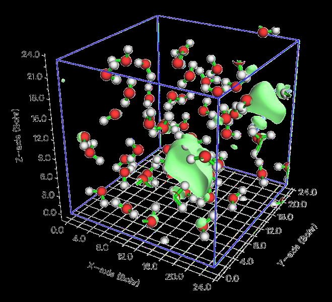
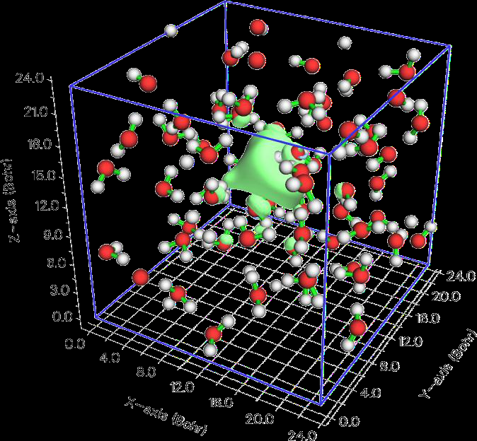

3.16 Processing grid data (13)¶
Multiwfn manual, p.210–216. Images:
../imgs/.
It is possible to obtain contact area between every pair of elements at the same time, just choose option “3 Calculate contact area between different elements” in fingerprint analysis menu.
An example of Becke surface analysis is given in Section 4.12.5. An example of Hirshfeld analysis and drawing fingerprint plot is given in Section 4.12.6, this example also illustrates how to easily plot pretty colored Hirshfeld surface via VMD program.
“Performing Hirshfeld surface analysis by Multiwfn to visually display interactions in molecular crystals and complexes” (http://sobereva.com/701, in Chinese) is an extremely detailed blog article which comprehensively introduces the Hirshfeld/Becke analysis in Multiwfn and present very rich examples, highly recommend reading!
Information needed: Depending on the real space function used to define the surface and that mapped on the surface. At least atom coordinates must be provided. (For local electron affinity, virtual MOs must be presented, hence such as .mwfn, .fch, .molden and .gms should be used in this case)
3.16 Processing grid data (13)¶
If grid data was loaded from input file when Multiwfn boots up, or grid data has been generated by main function 5 or other functions, a set of grid data will be presented in memory (which will be referred to as "present grid data" below), then this module will be available. If grid data has not been presented in memory but you choose this main function, you can also directly load grid data from an external file.
In this module, you can visualize present grid data, extract data in a specified plane, perform mathematical algorithm, set value in specified range by corresponding options and so on. These options will be described below.
3.16.0 Visualize isosurface of present grid data (-2)¶
Visualize isosurface of present grid data in a GUI window, this is useful to check validity of the grid data updated by some functions (e.g. function 11)
3.16.1 Export present grid data to Gaussian-type cube file (0)¶
If you choose this function, present grid data (may have been updated by using function 11, 13, 14, 15) along with atom information will be outputted to a cube file.
3.16.2 Output all data points with value and coordinate (1)¶
By this function, all present grid data will be outputted to output.txt in current folder, the first three columns correspond to X, Y, and Z in Å, the last column is data value.
3.16.3 Output data points in a XY/YZ/XZ plane (2, 3, 4)¶
By these functions, the grid data in the XY/YZ/XZ plane with specified Z/X/Y value will be
outputted to output.txt in current folder, which is a plain text file, you can load it to visualization softwares such as Sigmaplot and then plot plane graphs. Since grid data is discretely distributed, the actual outputted plane is the one nearest to your input Z/X/Y value.
Please read program prompts for the meaning of each column in output file.
3.16.4 Output average data of XY/YZ/XZ planes in a range of Z/X/Y (5, 6, 7)¶
By these functions, the average grid data in some XY/YZ/XZ planes whose Z/X/Y coordinate are in specified range will be outputted to output.txt in current folder. The column 1/2/3/4 correspond to X, Y, Z, value, respectively, geometry unit is Å.
3.16.5 Output data points in a plane defined three atom indices or three points (8, 9)¶
By these two functions, the data in an arbitrary plane can be outputted to a plain text file. However, if the plane you are interested in is XY/YZ/XZ plane, you should use function 2,3,4 instead respectively. You can define the plane by inputting three atom indices or by inputting three points.
You need to input tolerance distance, the data points whose distance to the plane are short than this value will be outputted. In general, it is recommended to input 0 to use default value.
Then if you want to project the data points to XY plane so that you can load them into some visualization softwares and then plot them as plane graph, you can input 1 to tell program to do that. You will find Z values of all points in the output file are zero.
3.16.6 Output data points in specified value range (10)¶
Like function 2, but only the data points whose value are in specified range will be outputted.
If you input both lower and upper limit of value as k, then the data between \((k)\times0.03\) k+abs(k)×0.03 will be outputted.
3.16.7 Grid data calculation (11)¶
In this function, you can perform algorithm for present grid data by corresponding options, then the grid data will be updated, and then you can use such as function -2 to visualize the updated grid data, use function 0 to output the updated grid data as cube file or extract data in a plane by functions 2~9, etc.
Supported operations are shown below, where A means value of present grid data, B means value at corresponding point in the cube file that will be loaded. C means the updated value at corresponding point.
- 1 Add a constant e.g. A+0.1=C
- 2 Add a grid file i.e. A+B=C
- 3 Subtract a constant e.g. A-0.1=C
- 4 Subtract a grid file i.e. A-B=C
- 5 Multiplied by a constant e.g. A*0.1=C
- 6 Multiplied by a grid file i.e. A*B=C
- 7 Divided by a constant e.g. A/5.2=C
- 8 Divided by a grid file i.e. A/B=C
- 9 Exponentiation e.g. A1.3=C
- 10 Square sum with a grid file i.e. A2+B2=C
- 11 Square subtract with a grid file i.e. A2-B2=C
- 12 Get average with a grid file i.e. (A+B)/2=C
- 13 Get absolute value i.e. |A|=C
- 14 Get exponential value with base 10 i.e. 10A=C
- 15 Get logarithm (base 10) ...
function is defined as min(|A|,|B|)/max(|A|,|B|). So, at any point, the more the magnitude of the data in A deviates from the counterpart in B, the severely the result will be punished. - 20 Multiplied by a coordinate variable: This option multiplies all grid data by one of
selected coordinate variables X, Y and Z. - 21 Get minimal value with another function i.e. min(A,B) - 22 Get min(|A|,|B|) If the operation you selected involves a number, you will be prompted to input its value; if it involves another grid data, you will be prompted to input the path of grid data file (supporting .cub, Dmol3 .grd and CHGCAR/CHG of VASP), of which the origin, translation vectors and number of points in each dimension must be identical to the grid data currently presented in memory.
3.16.8 Map values of a cube file to specified isosurface of present grid data (12)¶
The function is especially useful if you have an electron density cube file and corresponding ESP cube file, you can obtain ESP values of the points laying on the vdW surface, which may be defined as the isosurface with electron density isovalue of 0.001. (Note that main function 12 can realize the same goal, meanwhile the accuracy is higher)
You need to input a isovalue to define the isosurface of present grid data, assume that you input p, and then input deviation in percentage, referred to as k here, then the data points whose values
are between p+abs(p)0.01k and p−abs(p)0.01k will be regarded as isosurface points. Subsequently, you need to input the filename of another cube file (should have identical grid setting as present grid data), the value in this cube file of those isosurface points will be exported to output.txt in current folder, along with X/Y/Z coordinates.
3.16.9 Set value of the grid points that far away from / close to some atoms (13)¶
By this function, the value of grid points beyond or within scaled vdW region of a molecular fragment can be set to a specific value. This is very useful for screening uninteresting regions when
showing isosurface, namely setting value of this region to a very large value (very positive or very negative, according to the character of the grid data).
You need to input a scale factor for vdW radius, then input expected value. After that, you need to specify a fragment, you can either directly input atomic indices (e.g. 3,5,1-15,20), or input filename of a plain text file, in which a molecular fragment is defined as atomic list, below is an example of the file:
3
1 3 4
where 3 means there are three atoms in this fragment, 1, 3, 4 are corresponding atom indices.
Then all grid points that are beyond the region occupied by scaled vdW spheres of the fragment atoms will be set to specific value.
If the scale factor of vdW sphere is set to a negative value, e.g. -1.3, then all grid points that within the scaled vdW surface of the fragment will be set to the specific value.
An example of using this function is given in Section 4.13.4.1.
3.16.10 Set value of the grid points outside overlap region of two fragments (14)¶
This function is similar to function 13, but only the grid points outside superposition region of scaled vdW regions of two fragments will be set to a specified value. You can either directly input atomic indices of the two fragments, or prepare two files containing atom lists for the two fragments, the format is the same as function 13.
This function is very useful if you are only interested in studying isosurfaces between two fragments, all isosurfaces outside this region can be screened by setting grid data value to very large. An illustrative example is given in Section 4.13.4.2.
3.16.11 If data value is within certain range, set it to a specified value (15)¶
You need to input lower and upper limit value and an expected value, if any value in present grid data is within the range you inputted, its value will be set to the expected value.
3.16.12 Scale data range of present grid data (16)¶
By this function, the value of present grid data can be linearly scaled to certain range. You need to input original data range, assumed that you inputted 0.5,1.7, and you inputted -10,10 as new data range, then all the value of present grid data that higher than 1.7 will be set to 1.7, all the value lower than 0.5 will be set to 0.5. After that, the value between 0.5 and 1.7 will be linearly scaled to -10,10. It may be clearer if the algorithm is expressed as pseudo-code:
where (value>0.5) value=0.5
where (value<1.7) value=1.7
all value = all value - 0.5
ratiofac = [10 - (-10)] / (1.7 - 0.5) = 20/1.2
all value = all value * ratiofac
all value = all value + (-10)
3.16.13 Show statistic data of grid points in specific spatial and value ranges (17)¶
This function can output statistic data of the grid points in specific spatial and value ranges. If the user do not want to impose any constraint (namely the statistical data is for all data points), input 1. If constraint(s) are needed to be imposed, the user should input 2, then value range and spatial region can be specified, only grid points simultaneously satisfy the conditions will be included into the statistics. Three types of spatial regions are supported: spherical, cylindrical and rectangular.
The minimum and maximum value, average, root mean square, standard deviation, volume, sum, integral and barycenter position of the data points satisfied the constraints will be outputted. The positive, negative and total barycenter are computed respectively as
where f is the data value, r denotes coordinate vector, the indices i, j and k run over positive, negative and all grid points respectively.
3.16.14 Plot (local) integral curve and plane-averaged curve in X/Y/Z direction (18)¶
This function calculates and plots various kinds of curve based on the grid data in memory, so that distribution of the real space function represented by the grid data can be studied quantitatively and clearly in a specific direction.
Integral curve is defined as below (e.g. in Z direction). The -∞ and ∞ denote the position of lower and upper limits of the grid data in the direction to be integrated, respectively; p denotes the real space function represented by the grid data.
Local integral curve is defined as (e.g. in Z direction)
Evidently
LzI zIzz= ∫ '( ')( )d z ini
Plane-averaged curve is defined as (e.g. in Z direction)
where AXY is area of the box of the grid data in XY.
In Multiwfn, I, IL and pavg curves are evaluated based on numerical integration of the grid data in memory. In the present function, user first needs to choose which direction to study, and then input the lower and upper limit of the coordinate in this direction. Assume that user has chosen Z as the direction of interest, and the lower and upper limits were set to -5 and 10, respectively, then the spatial range of the curve generated by Multiwfn will be z = [-5,10], and the \(z_{\text{ini}}\) in above formula will be -5. If you press ENTER button directly when Multiwfn asks you to input range, then the minimal and maximal values of Z coordinate of present grid data will be taken as lower and upper limit, respectively.
After calculation of (local) integral curve and plane-averaged curve is finished, you will see a menu. By corresponding options in the menu, the graph of the curves can be plotted or saved, the curve data can be exported to current folder as a plain text file. When a curve is plotted, position and value of minima and maxima of the curve are automatically shown on console window. Via option 11 in this function, you can calculate curve value at a given position.
It is noteworthy that to use this function, the grid is not necessarily orthogonal, however the following conditions must be satisfied:
(1) If calculate the curve along X axis, the first translation vector of the grid must be parallel along X, while the other two must be parallel to YZ plane.
(2) If calculate the curve along Y axis, the second translation vector of the grid must be parallel along Y, while the other two must be parallel to XZ plane.
(3) If calculate the curve along Z axis, the third translation vector of the grid must be parallel along Z, while the other two must be parallel to XY plane.
If the integrand is chosen as electron density difference, then the integral curve sometimes is known as "charge displacement curve" and useful in discussion of charge transfer, see J. Am. Chem. Soc., 130, 1048 (2008) for example. If you want to obtain such a curve, before entering this function, you should calculate grid data of electron density difference, or directly load the grid data from external file (e.g. cube file).
Very nice examples of applying local integral curve of electron density in discussing electron transfer are ChemPhysChem, 22, 386 (2021) and Carbon, 171, 514 (2021) (see Supplemental Information).
A practical example is given in Section 4.13.6. Information needed: Grid data
3.16.15 Translate grid data within current box (19)¶
This function is mainly used to translate grid data for periodic systems. The range of the grid data box is kept unchanged, the grid points outside the box after translation will be automatically wrapped into the box, and you can also choose to wrap atoms when any atom is detected to be outside the box.
This function is particularly useful to make the region of interest centered in the cell for ease of visual inspection. For example, the 0.001 a.u. isosurface of spin density of a solvated electron system is shown below, the blue frame corresponds to the grid data box. As can be seen, the isosurface is unfortunately truncated by the cell of the periodic DFT calculation.
To fix this issue, after loading the grid data file into Multiwfn, you should input 13 //Processing grid data 19 //Translate grid data -0.3 //Translate 30% in the negative direction along the first axis 0.5 //Translate 50% in the positive direction along the second axis [Press ENTER button] //Do not translate along the third axis y //Wrap atoms that outside the box into the box Now if you choose option -2 to visualize the isosurface, you will see the following map, clearly the region of interest has been centered, and thus you can easily visualize the entire solvated electron. Also, you can choose option -1 to export the new grid data as a .cub file.

